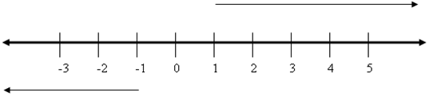

Los números naturales son los números que usamos para contar: 1, 2, 3, 4, 5, 6, 7,
Los representamos por:
= {1, 2, 3, 4, 5, 6, 7, 8, 9, 10, …}
Cuando añadimos el cero y los enteros negativos a los números naturales, obtenemos los números enteros y los denotamos por:
= {…, -4, -3, -2, -1, 0, 1, 2, 3, …}
y los representamos en una recta:

El valor absoluto de un número entero es el número natural que resulta cuando le quitamos el signo:
|-5| = 5 |11| = 11 |0| = 0
Recuerda la jerarquía de las operaciones:
- Primero paréntesis, corchetes,…
- Potencias y raíces
- Multiplicaciones y divisiones
- Sumas y restas
Ejercicio. Calcula:
a) 7 - 5·(3-4)+ 8:2 =
b) 3- [4 - 5·3 + 12:2 - (4 + 5·3)] =
c) 3·5 - 4 + 2·(5- 3·2) + 8:(4-2) =
d) |-7|=
e) |13|=
Soluciones: a) 16; b) 27; c) 13; d) 7; e) 13